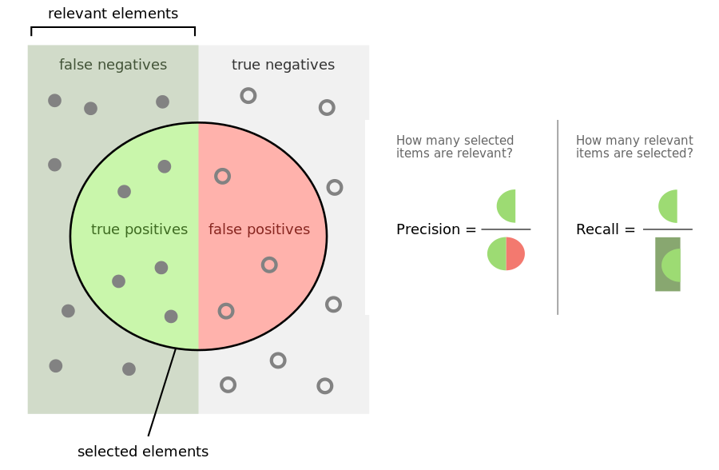
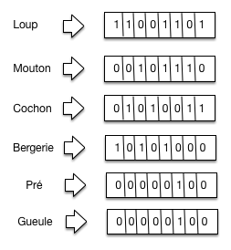
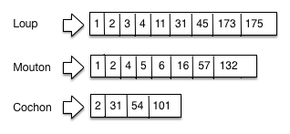
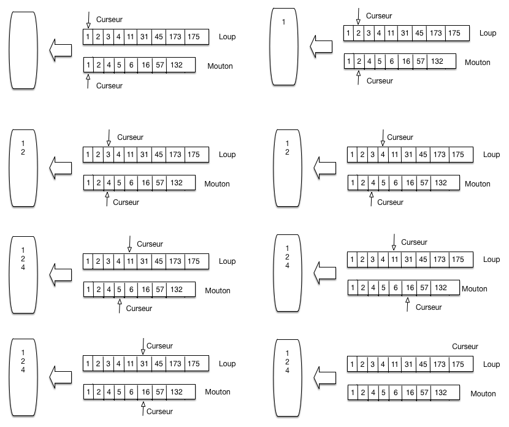
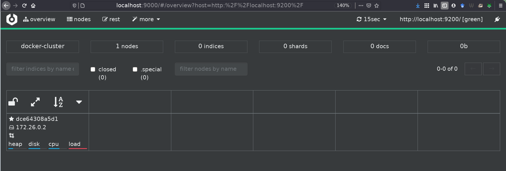
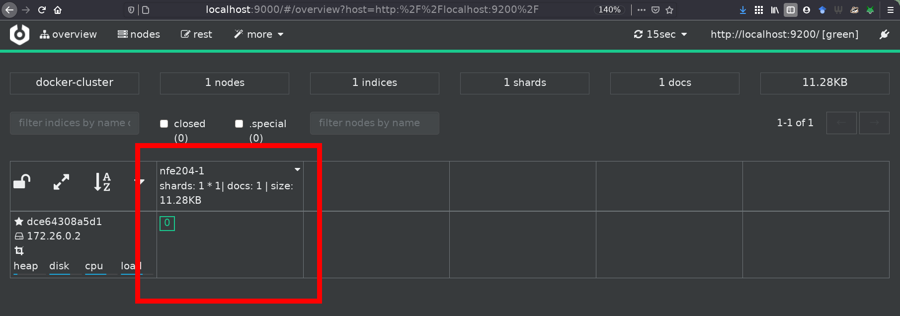
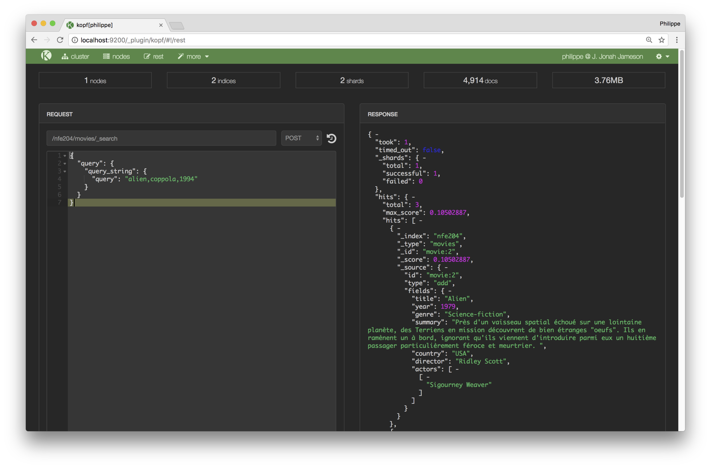

Introduction à la recherche d’information¶
Supports complémentaires:
Un cours complet en ligne (en anglais) et accompagné d’un ouvrage de référence : http://www-nlp.stanford.edu/IR-book/. Certaines parties du cours empruntent des exemples à ce livre.
S1: les principes¶
Supports complémentaires:
Qu’est ce que la recherche d’information¶
La Recherche d’Information (RI, Information Retrieval, IR en anglais) consiste à trouver des documents peu ou faiblement structurés, dans une grande collection, en fonction d’un besoin d’information. Le domaine d’application le plus connu est celui de la recherche « plein texte ». Étant donné une collection de documents constitués essentiellement de texte, comment trouver les plus pertinents en fonction d’un besoin exprimé par quelques mots-clés? La RI développe des modèles pour interpréter les documents d’une part, le besoin d’information d’autre part, en vue de faire correspondre les deux, mais aussi des techniques pour calculer des réponses rapidement même en présence de collections très volumineuses. Enfin, des systèmes (appelés « moteurs de recherches ») fournissent des solutions sophistiquées prêtes à l’emploi.
La RI a pris une très grande importance, en raison notamment de l’émergence de vastes sources de documents que l’on peut agréger et exploiter (le Web bien sûr, mais aussi les systèmes d’information d’entreprise). Les techniques utilisées ont également beaucoup progressé, avec des résultats spectaculaires. La RI est maintenant omniprésente dans beaucoup d’environnements informatiques, et notamment:
La recherche sur le Web, utilisée quotidiennement par des milliards d’utilisateurs,
La recherche de messages dans votre boîte mail,
La recherche de fichiers sur votre ordinateur (Spotlight),
La recherche de documents dans une base documentaire, publique ou privée,
Ce chapitre introduit ces différents aspects en se concentrant sur la recherche d’information appliquée à des collections de documents structurés, comprenant des parties textuelles importantes.
Précision et rappel¶
Comme le montre la définition assez imprécise donnée en préambule, la recherche d’information se donne un objectif à la fois ambitieux et relativement vague. Cela s’explique en partie par le contexte d’utilisation de ces systèmes. Avec une base de données classique, on connaît le schéma des données, leur organisation générale, avec des contraintes qui garantissent qu’elles ont une certaine régularité. En RI, les données, ou « documents », sont souvent hétérogènes, de provenances diverses, présentent des irrégularités et des variations dues à l’absence de contrainte et de validation au moment de leur création. De plus, un système de RI est souvent utilisé par des utilisateurs non-experts. À la difficulté d’interpréter le contenu des documents et de le décrire s’ajoute celle de comprendre le « besoin », exprimé souvent de manière très partielle.
D’une certaine manière, la RI vise essentiellement à prendre en compte ces difficultés pour proposer des réponses les plus pertinentes possibles. La notion de pertinence est centrale ici: un document est pertinent s’il satisfait le besoin exprimé. Quand on utilise SQL, on considère que la réponse est toujours exacte car définie de manière mathématique (en fonction de l’état de la base). En RI, on ne peut jamais considérer qu’un résultat, constitué d’un ensemble de documents, est exact, mais on mesure son degré de pertinence (c’est-à-dire les erreurs du système de recherche) en distinguant:
les faux positifs: ce sont les documents non pertinents inclus dans le résultat; ils ont été sélectionnés à tort. En anglais, on parle de false positive.
les faux négatifs: ce sont les documents pertinents qui ne sont pas inclus dans le résultat. En anglais, on parle de false negative.
Les documents pertinents inclus dans le résultat sont appelés les vrais positifs, les documents non pertinents non inclus dans le résultat sont appelés les vrais négatifs. On le voit à ce qui vient d’être dit : on emploie le terme positif pour désigner ce qui a été ramené dans le résultat de recherche. À l’inverse, les documents qui sont négatifs ont été laissés de côté par le moteur de recherche au moment de faire correspondre des documents avec un besoin d’information. Et l’on désigne par vrai ce qui a été bien classé (dans le résultat ou hors du résultat).
Deux indicateurs formels, basés sur ces notions, sont couramment employés pour mesurer la qualité d’un système de RI.
La précision
La précision mesure la proportion des vrais positifs dans le résultat r. Si on note respectivement \(t_p(r)\) et \(f_p(r)\) le nombre de vrais et de faux positifs dans r (de taille \(|r|\)), alors
Une précision de 1 correspond à l’absence totale de faux positifs. Une précision nulle indique un résultat ne contenant aucun document pertinent.
Le rappel
Le rappel mesure la proportion des documents pertinents qui sont inclus dans le résultat. Si on note \(f_n(r)\) le nombre de documents faussement négatifs, alors le rappel est:
Un rappel de 1 signifie que tous les documents pertinents apparaissent dans le résultat. Un rappel de 0 signifie qu’il n’y a aucun document pertinent dans le résultat.
La Fig. 31 illustre (en anglais) ces concepts pour bien distinguer les ensembles dont on parle pour chaque requête de recherche et les mesures associées.

Fig. 31 Vrai, faux, positifs, négatifs.¶
Ces deux indicateurs sont très difficiles à optimiser simultanément. Pour augmenter le rappel, il suffit d’ajouter plus de documents dans le résultat, au détriment de la précision. À l’extrême, un résultat qui contient toute la collection interrogée a un rappel de 1, et une précision qui tend vers 0. Inversement, si on fait le choix de ne garder dans le résultat que les documents dont on est sûr de la pertinence, la précision s’améliore mais on augmente le risque de faux négatifs (c’est-à-dire de ne pas garder des documents pertinents), et donc d’un rappel dégradé.
L’évaluation d’un système de RI est un tâche complexe et fragile car elle repose sur des enquêtes impliquant des utilisateurs. Reportez-vous à l’ouvrage de référence cité au début du chapitre (et au matériel de cours associé) pour en savoir plus.
La recherche plein texte¶
Commençons par étudier une méthode simple de recherche pour trouver des documents répondant à une recherche dite « plein texte » constituée d’un ensemble de mots-clés. On va donner à cette recherche une définition assez restrictive pour l’instant: il s’agit de trouver tous les documents contenant tous les mots-clés. Prenons pour exemple l’ensemble (modeste) de documents ci-dessous.
\(d_1\):
Le loup est dans la bergerie.\(d_2\):
Le loup et le trois petits cochons\(d_3\):
Les moutons sont dans la bergerie.\(d_4\):
Spider Cochon, Spider Cochon, il peut marcher au plafond.\(d_5\):
Un loup a mangé un mouton, les autres loups sont restés dans la bergerie.\(d_6\):
Il y a trois moutons dans le pré, et un mouton dans la gueule du loup.\(d_7\):
Le cochon est à 12 le Kg, le mouton à 10 E/Kg\(d_8\):
Les trois petits loups et le grand méchant cochon
Et ainsi de suite. Supposons que l’on recherche tous les documents parlant de loups, de moutons mais pas de bergerie (c’est le besoin). Une solution simple consiste à parcourir tous les documents et à tester la présence des mots-clés. Ce n’est pas très satisfaisant car:
c’est potentiellement long, pas sur notre exemple bien sûr, mais en présence d’un ensemble volumineux de documents;
le critère « pas de bergerie » n’est pas facile à traiter;
les autres types de recherche (« le mot “loup” doit être près du mot “mouton” ») sont difficiles;
quid si je veux classer par pertinence les documents trouvés?
On peut faire mieux en créant une structure compacte sur laquelle peuvent s’effectuer les opérations de recherche. Les données sont organisées dans une matrice (dite d’incidence) qui représente l’occurrence (ou non) de chaque mot dans chaque document. On peut, au choix, représenter les mots en colonnes et les documents en ligne, ou l’inverse. La première solution semble plus naturelle (chaque fois que j’insère un nouveau document, j’ajoute une ligne dans la matrice). Nous verrons plus loin que la seconde représentation, appelée matrice inversée, est en fait beaucoup plus appropriée pour une recherche efficace.
Terme, vocabulaire.
Nous utilisons progressivement la notion de terme (token en anglais) qui est un peu différente de celle de « mot ». Le vocabulaire, parfois appelé dictionnaire, est l’ensemble des termes sur lesquels on peut poser une requête. Ces notions seront développées plus loin.
Commençons par montrer une matrice d’incidence avec les documents en ligne. On se limite au vocabulaire suivant: {« loup », « mouton », « cochon », « bergerie », « pré », « gueule »}.
Tableau 9 La matrice d’incidence¶ loup
mouton
cochon
bergerie
pré
gueule
\(d_1\)
1
0
0
1
0
0
\(d_2\)
1
0
1
0
0
0
\(d_3\)
0
1
0
1
0
0
\(d_4\)
0
0
1
0
0
0
\(d_5\)
1
1
0
1
0
0
\(d_6\)
1
1
0
0
1
1
\(d_7\)
0
1
1
0
0
0
\(d_8\)
1
0
1
0
0
0
Cette structure est parfois utilisée dans les bases de données sous le nom d’index bitmap. Elle permet de répondre à notre besoin de la manière suivante :
On prend les vecteurs d’incidence de chaque terme contenu dans la requête, soit les colonnes dans notre représentation :
Loup: 11001101
Mouton: 00101110
Bergerie: 01010011
On fait un
et(logique) sur les vecteurs de Loup et Mouton et on obtient 00001100Puis on fait un
etdu résultat avec le complément du vecteur de Bergerie (01010111)On obtient 00000100, d’où on déduit que la réponse est limitée au document \(d_6\), puisque la 6e position est la seule où il y a un “1”.
Les index inversés¶
Si on imagine maintenant des données à grande échelle, on s’aperçoit que cette approche un peu naïve soulève quelques problèmes. Posons par exemple les hypothèses suivantes:
Un million de documents, mille mots chacun en moyenne (ordre de grandeur d’une encyclopédie en ligne bien connue)
Disons 6 octets par mot, soit 6 Go (pas très gros en fait!)
Disons 500 000 termes distincts (ordre de grandeur du nombre de mots dans une langue comme l’anglais)
La matrice a 1 000 000 de lignes, 500 000 colonnes, donc \(500 \times 10^9\) bits, soit 62 GO. Elle ne tient pas en mémoire de nombreuses machines, ce qui va beaucoup compliquer les choses…. Comment faire mieux?
Une première remarque est que nous avons besoin des vecteurs pour les termes
(mots) pour effectuer des opérations logiques (and, or, not) et il
est donc préférable d’inverser la matrice pour disposer les termes en ligne
(la représentation est une question de convention: ce qui est important c’est
qu’au niveau de la structure de données, le vecteur d’incidence associé à un
terme soit stocké contigument en mémoire et donc accessible simplement et
rapidement). On obtient la structure de la Fig. 32
pour notre petit ensemble de documents.

Fig. 32 Inversion de la matrice¶
Seconde remarque: la matrice d’incidence est creuse. En effet, sur chaque ligne, il y a au plus 1000 « 1 » (cas extrême où tous les termes du document sont distincts). Donc, dans l’ensemble de la matrice, il n’y a au plus que \(10^9\) positions avec des 1, soit un sur 500. Il est donc tout à fait inutile de représenter les cellules avec des 0. On obtient une structure appelée index inversé qui est essentiellement l’ensemble des lignes de la matrice d’incidence, dans laquelle on ne représente que les cellules correspondant à au moins une occurrence du terme (en ligne) dans le document (en colonne).
Important
Comme on ne représente plus l’ensemble des colonnes pour chaque ligne, il faut indiquer, pour chaque cellule, à quelle colonne elle correspond. Pour cela, on place dans les cellules l’identifiant du document (docId). De plus chaque liste est triée sur l’identifiant du document.
La Fig. 33 montre un exemple d’index inversé pour trois termes, pour une collection importante de documents consacrés à nos animaux familiers. À chaque terme est associé une liste inverse.

Fig. 33 Un index inversé¶
On parle donc de cochon dans les documents 2, 31, 54 et 101 (notez que les documents sont ordonnés — très important). Il est clair que la taille des listes inverses varie en fonction de la fréquence d’un terme dans la collection.
La structure d’index inversé est utilisée dans tous les moteurs de recherche. Elle présente d’excellentes propriétés pour une recherche efficace, avec en particulier des possibilités importantes de compression des listes associées à chaque terme.
Vocabulaire
Le dictionnaire (dictionary) est l’ensemble des termes de l’index inversé; le répertoire est la structure qui associe chaque terme à l’adresse de la liste inversée (posting list) associée au terme. Enfin on ne parle plus de cellule (la matrice a disparu) mais d’entrée pour désigner un élément d’une liste inverse.
En principe, le répertoire est toujours en mémoire, ce qui permet de trouver très rapidement les listes impliquées dans la recherche. Les listes inverses sont, autant que possible, en mémoire, sinon elles sont compressées et stockées dans des fichiers (contigus) sur le disque.
Opérations de recherche¶
Étant donné cette structure, recherchons les documents parlant de loup et de
mouton. On ne peut plus faire un et sur des tableaux de bits de taille fixe
puisque nous avons maintenant des listes de taille variable. L’algorithme
employé est une fusion (« merge ») de liste triées. C’est une technique très
efficace qui consiste à parcourir en parallèle et séquentiellement des listes,
en une seule fois. Le parcours unique est permis par le tri des listes sur un
même critère (l’identifiant du document).
La Fig. 34 montre comment on traite la requête loup
et mouton. On maintient deux curseurs, positionnés au départ au début de
chaque liste. L’algorithme compare les valeurs des docId contenues dans les
cellules pointées par les deux curseurs. On compare ces deux valeurs, puis:
(choix A) si elles sont égales, on a trouvé un document: on place son identifiant dans le résultat, à gauche; on avance les deux curseurs d’un cran
(choix B) sinon, on avance le curseur pointant sur la cellule dont la valeur est la plus petite, jusqu’à atteindre ou dépasser la valeur la plus grande.

Fig. 34 Parcours linéaire pour la fusion de listes triées¶
La Fig. 34 se lit de gauche à droite, de haut en bas. On applique tout d’abord deux fois le choix A: les documents 1 et 2 parlent de loup et de mouton. À la troisième étape, le curseur du haut (loup) pointe sur le document 3, le pointeur du bas (mouton) sur le document 4. On applique le choix B en déplaçant le curseur du haut jusqu’à la valeur 4.
Et ainsi de suite. Il est clair qu’un seul parcours suffit. La recherche est linéaire, et l’efficacité est garantie par un parcours séquentiel d’une structure (la liste) très compacte. De plus, il n’est pas nécessaire d’attendre la fin du parcours de toutes les listes pour commencer à obtenir le résultat. L’algorithme est résumé ci-dessous.
// Fusion de deux listes l1 et l2
function Intersect($l1, $l2)
{
$résultat = [];
// Début de la fusion des listes
while ($l1 != null and $l2 != null) {
if ($l1.docId == $l2.docId) {
// On a trouvé un document contenant les deux termes
$résultat += $l1.docId;
// Avançons sur les deux listes
$l1 = $l1.next; $l2 = $l2.next;
}
else if ($l1.docId < $l2.docId) {
// Avançons sur l1
$l1 = $l1.next;
}
else {
// Avançons sur l2
$l2 = $l2.next;
}
}
}
C’est l’algorithme de base de la recherche d’information. Dans la version présentée ici, on satisfait des requêtes dites booléennes: l’appartenance d’un document au résultat est binaire, et il n’y a aucun classement par pertinence.
À partir de cette technique élémentaire, on peut commencer à raffiner, pour aboutir aux techniques sophistiquées visant à capturer au mieux le besoin de l’utilisateur, à trouver les documents qui satisfont ce besoin et à les classer par pertinence. Pour en arriver là, tout un ensemble d’étapes que nous avons ignorées dans la présentation abrégée qui précède sont nécessaires. Nous les reprenons dans ce qui suit.

{kind=link}
{kind=link}
{kind=link}
{kind=link}
S2: Bases documentaires et moteur de recherche¶
Supports complémentaires
Dans cette section, nous allons passer au concret en introduisant les moteurs de recherche. Nous allons utiliser ici Elastic Search, un moteur de recherche qui s’installe et s’initialise très facilement. Nous indexerons nos premiers documents, et commencerons à faire nos premières requêtes.
ElasticSearch ou Solr
ElasticSearch est un moteur de recherche disponible sous licence libre (Apache). Il repose sur Lucene (nous verrons plus bas ce que cela signifie). Il a été développé à partir de 2004 et est aujourd’hui adossé à une entreprise, Elastic.co. Un autre moteur de recherche libre existe: Solr (prononcé « Solar »), lui aussi reposant sur Lucene. Bien que leurs configurations soient différentes, les fonctionnalités de ces deux moteurs sont comparables (cela n’a pas toujours été le cas). Nous choisissons ElasticSearch pour ce cours, mais vous ne devriez pas avoir beaucoup de difficultés à passer à Solr.
Nous allons nous appuyer entièrement sur les choix par défaut d’ElasticSearch pour nous concentrer sur son utilisation. La construction d’un moteur de recherche en production demande un peu plus de soin, nous en verrons au chapitre suivant les étapes nécessaires.
Architecture du système d’information avec un moteur de recherche¶
Un moteur de recherche comme ElasticSearch est une application spécialisée dans la recherche, qui s’appuie sur un index open source écrit en Java, Lucene. C’est-à-dire que l’implémentation des structures de données et les algorithmes de parcours vus dans la section précédente sont déléguées à Lucene (qui profite régulièrement des avancées des techniques de Recherche d’Information issues du monde académique).
Une question qui vient naturellement à l’esprit est alors: mais pourquoi ne pas utiliser directement le moteur de recherche comme gestionnaire des documents ? En effet, pourquoi s’embarrasser de MongoDB alors qu’ElasticSearch permet des recherches puissantes, efficaces, ainsi que le stockage et l’accès aux documents.
La réponse est qu’un système comme ElasticSearch est entièrement consacré à la recherche (donc à la lecture) la plus efficace possible de documents. Il s’appuie pour cela sur des structures compactes, compressées, optimisées (les index inversés) dont nous avons donné un aperçu. En revanche, ce n’est pas nécessairement un très bon outil pour les autres fonctionnalités d’une base de données. Le stockage par exemple n’est ni aussi robuste ni aussi stable, et il faut parfois reconstruire l’index à partir de la base originale (on parlera de réindexer les documents).
Un système comme ElasticSearch (ou Solr, ou un autre s’appuyant sur des index inversés) n’est pas non plus très bon pour des données souvent modifiées. Pour des raisons qui tiennent à la structure de ces index, les mises à jour sont coûteuses et s’effectuent difficilement en temps réel. La notion de mise à jour vaut ici aussi bien pour le contenu des documents (modification de la valeur d’un champ) que pour leur structure (ajout ou suppression d’un champ par exemple).
La pratique la plus courante consiste donc à utiliser un système de recherche comme un complément d’un serveur de base de données (relationnelle ou documentaire) et à lui confier les tâches de recherche que le serveur BD ne sait pas accomplir (soit, en gros, les recherches non structurées). Dans le cas des bases NoSQL, l’absence fréquente de tout langage de requête fait du moteur de recherche associé un outil indispensable.
Même en cas de présence d’un langage d’interrogation fourni par le système NoSQL, le moteur de recherche est un candidat tout à fait valide pour satisfaire les recherches plein texte et les recherches structurées. En résumé, à part les deux inconvénients (reconstruction depuis une source extérieure, support faible des mises à jour), les moteurs de recherche sont des composants puissants aptes à satisfaire efficacement les besoins d’un système documentaire.
Note
Les paragraphes ci-dessus sont à prendre avec réserve, car l’évolution d’un système comme Elastic Search montre qu’il tend à devenir également un gestionnaire robuste pour le stockage de documents. Il n’est pas exclu qu’Elastic Search devienne à terme une option tout à fait valable pour l’indexation et le stockage ce qui simplifierait l’architecture.

Fig. 35 Architecture d’une application avec moteur de recherche.¶
La Fig. 35 montre une architecture typique, en prenant pour exemple une base de données MongoDB. Les documents (applicatifs) sont donc dans la base MongoDB qui fournit des fonctionnalités de recherche structurées. On peut indexer la collection des documents applicatifs en extrayant des « champs » formant des documents (au sens d’ElasticSearch, Solr) fournis à l’index qui se charge de les organiser pour satisfaire efficacement des requêtes. L’application peut alors soit s’adresser au serveur MongoDB, soit au moteur de recherche.
Un scénario typique est celui d’une recherche par mot-clé dans un site. Les
données du site sont périodiquement extraites de la base et indexées dans
Elasticsearch. Ce dernier se charge alors de répondre à la fonctionnalité
Search que l’on trouve couramment sur tous les types de site.
Note
On pourrait se demander s’il n’est pas inefficace de dupliquer les documents de la base de données vers le moteur de recherche. En fait, c’est un inconvénient, mais assez mineur car on filtre généralement les documents de la base pour n’indexer que les champs soumis à des recherches plein texte comme le résumé du film. De plus, les données fournies ne sont pas stockées telles-quelles mais compressées et réorganisées dans des listes inversées. Le contenu de la base de données n’est donc pas un miroir de l’index géré par le moteur de recherche.
Mise en place d’ElasticSearch¶
Commençons par l’installation avec Docker. Voici une commande qui devrait fonctionner sous tous les systèmes et mettre ElasticSearch en attente sur le port 9200.
docker run -d --name es1 -p 9200:9200 -p 9300:9300 -e "discovery.type=single-node" elasticsearch:7.8.1
Quelques remarques:
L’option
-dlance le serveur ElasticSearch en tâche de fond (vous pouvez l’enlever, mais vous devrez utiliser une autre console pour lancer des commandes, elle sera dévolue aux messages du serveur)Les serveurs ElasticSearch prennent par défaut des noms tirés du catalogue des héros Marvel.
Les versions d’ElasticSearch
ElasticSearch évolue rapidement. Pour éviter que les instructions qui suivent ne deviennent rapidement obsolètes, j’indique le numéro de version dans l’installation avec Docker (la 7.8.1, de juillet 2020).
Ici, le nombre de fragments de l’index est fixé à 1, et le degré de réplication à 0. Cela revient à demander à ElasticSearch de s’exécuter en mode local, sans distribution. Tout cela sera revu plus tard.
Toutes les interactions avec un serveur ElasticSearch passent par une interface REST basée sur JSON (revoyez au besoin le chapitre Interrogation de bases NoSQL). Vous pouvez directement vous adresser au serveur REST en écoute sur le port 9200.
Vous pouvez obtenir l’IP de votre conteneur (que l’on a nommé es1) avec la commande Bash suivante:
docker inspect --format '{{ .NetworkSettings.IPAddress }}' es1
localhost
Pour simplifier le travail des élèves sur les machines du CNAM, nous utilisons dans la suite « localhost » comme nom de machine (équivalent à 127.0.0.1). Si vous travaillez sur une autre machine, relevez l’IP obtenue ci-dessus et remplacez localhost par cette adresse IP dans les commandes.
Un accès avec votre navigateur (ou avec cUrl) à http://localhost:9200 devrait renvoyer un document JSON semblable à
celui-ci:
{
"name": "7a46670f6a9e",
"cluster_name": "docker-cluster",
"cluster_uuid": "89U3LpNhTh6Vr9UUOTZAjw",
"version": {
"number": "7.8.1",
"...": "...",
"lucene_version": "8.5.1",
},
"tagline": "You Know, for Search"
}
Pour une inspection confortable du serveur et des index ElasticSearch, nous
vous conseillons d’utiliser une interface d’admiistration: cerebro (successeur
de Kopf). Elle peut être téléchargée ici: https://github.com/lmenezes/cerebro.
Vous obtenez un répertoire cerebro-xx-yy-zz. Il faut exécuter le programme
bin/cerebro de ce répertoire.
Sous Unix/Linux, voici la séquence de commandes correspondante :
wget https://github.com/lmenezes/cerebro/releases/download/v0.9.2/cerebro-0.9.2.tgz
tar -xvzf cerebro-0.9.2.tgz; cd cerebro-0.9.2;
./bin/cerebro
Testez que tout fonctionne en visitant (avec un navigateur de votre machine)
l’adresse http://localhost:9000/#/connect, en saisissant l’adresse du serveur
Elasticsearch dans la première fenêtre (http://localhost:9200/). Vous
devriez obtenir l’affichage de la Fig. 36 montrant le serveur (ici
ayant l’identifiant dce64308a5d1) et proposant tout un ensemble
d’actions. En particulier, la barre supérieure de l’interface propose un bouton
rest, permettant d’accéder à un espace de travail optimisé pour éditer
des requêtes et vérifier les résultats.
{kind=link}

Fig. 36 Le tableau de bord proposé par Cerebro.¶
ElasticSearch organise les données selon trois niveaux:
l’index regroupe des chemins d’accès à un collection de documents;
le type désigne le format du document indexé;
l’identifiant sert de clé d’accès à un document;
enfin chaque document a un numéro de version.
Première indexation¶
L’indexation dans un moteur de recherche, c’est l’opération qui consiste à
stocker un document, à l’aide des index. Nous allons dans ce qui suit indexer
un de nos films dans l’index nfe204-1, avec le type movies. Elasticsearch
est par défaut assez souple et se charge d’inférer la nature des champs du
document que nous lui transmettons. Nous verrons dans le chapitre
Recherche d’information : l’indexation que l’on peut paramétrer précisément cette étape, pour
optimiser les performances d’ElasticSearch et améliorer l’expérience des
utilisateurs de notre application.
Téléchargez le document movie_1.json.
Pour transmettre notre document à Elasticsearch, on exécute la commande
suivante, dans un terminal (dans le dossier où se trouve movie_1.json) :
curl -X PUT http://localhost:9200/nfe204-1/movies/movie:1 -H 'Content-Type: application/json' --data-binary @movie_1.json
Note
Les versions récentes d’ElasticSearch n’acceptent pas d’attribut nommé _id dans le document
JSON. Retirez-le avant d’effectuer l’insertion, s’il est présent.
Le PUT crée une « ressource » (au sens Web/REST du terme, cf. chapitre
Interrogation de bases NoSQL) à l’URL indiquée. Attention à bien spécifier comme
identifiant de la ressource la même valeur que celle du champ _id du
document JSON. Si vous avez pratiqué un peu l’interface REST de CouchDB, vous
remarquerez que l’on retrouve exactement les mêmes principes.
La réponse devrait être:
{
"_index": "nfe204-1",
"_type": "movies",
"_id": "movie:1",
"_version": 1,
"result": "created",
"_shards": {
"total": 2,
"successful": 1,
"failed": 0
},
"_seq_no": 0,
"_primary_term": 1
}
Attention, comme on a fait une indexation directe qui crée l’index, il nous faut saisir cette commande pour ajuster un paramètre d’Elasticsearch (sinon le cluster passe en orange dans l’interface Cerebro, avec un problème de sharding) :
curl -X PUT "localhost:9200/nfe204-1/_settings?pretty" -H 'Content-Type: application/json' -d' { "number_of_replicas": 0 }'
Si nous rafraichissons l’interface web, nous obtenons l’affichage de la
Fig. 37, avec un nouvel index nfe204-1.
{kind=link}

Fig. 37 Apparition d’un nouvel index (encadré en rouge)¶
La ressource étant créée, un GET permet de la ramener.
curl -X GET http://localhost:9200/nfe204-1/movies/movie:1
Indexer davantage de documents¶
Il serait très fastidieux d’indexer un à un tous les documents d’une collection, d’autant plus que c’est une opération à répéter régulièrement pour mettre les documents du moteur de recherche à jour avec le contenu de la base.
Sinon, on risque d’avoir les deux situations suivantes, peu souhaitable pour les utilisateurs du système :
un document présent dans la source mais pas dans l’index, et donc non trouvé lors d’une recherche;
un document présent dans l’index mais détruit dans la source, trouvé donc par une recherche alors qu’il n’existe pas.
Dans les versions précédentes d’Elasticsearch, il existait un mécanisme de
river (fleuve), par lequel les documents de Mongodb pouvaient couler
(automatiquement) vers Elasticsearch. Ce mécanisme a disparu, nous verrons en
Travaux Pratiques comment automatiser tout de même cette synchronisation. Pour
le moment, nous allons nous contenter d’utiliser une autre interface
d’Elasticsearch, appelée bulk (en grosses quantités), qui permet comme son
nom l’indique d’indexer de nombreux documents en une seule commande.
Récupérez notre collection de films, au format JSON adapté à l’insertion en masse
dans ElasticSearch, sur le site http://deptfod.cnam.fr/bd/tp/datasets. Le fichier
se nomme films_esearch.json.
Vous pouvez l’ouvrir pour voir le format. Chaque document
« film » (sur une seule ligne) est précédé d’un petit document JSON qui précise l’index (movies), le
type de document (movie) et l’identifiant (1).
{"index":{"_index": "nfe204","_type":"movies","_id": "movie"}}
On trouve ensuite les documents JSON proprement dits. Attention il ne doit pas y avoir de retour à la ligne dans le codage JSON, ce qui est le cas dans le document que nous fournissons.
{"title": "Mars Attacks!", "summary": "...", "...": "..."}
Ensuite, importez les documents dans Elasticsearch avec la commande suivante (en étant placé dans le dossier où a été récupéré le fichier):
curl -s -XPOST http://localhost:9200/_bulk/ -H 'Content-Type: application/json' --data-binary @films_esearch.json
Puis, comme précédemment (pour le partitionnement) :
curl -X PUT "localhost:9200/nfe204/_settings?pretty" -H 'Content-Type: application/json' -d' { "number_of_replicas": 0 }'
Avec les paramètres spécifiés dans le fichier films_esearch.json, vous
devriez retrouver un index nfe204 maintenant présent dans l’interface, contenant
les données sur les films.
Nous sommes prêts à interroger notre moteur de recherche avec l’API REST. Dans
l’interface Cerebro, ou simplement avec votre navigateur (qui agit comme un
client HTTP et donc REST, rappelons-le), utilisez le chemin _search pour
déclencher la fonction de recherche. Vous pouvez également transmettre quelques
requêtes par mot-clé sur un des index, par exemple
nfe204/movies/_search?q=Logan.
Mise en pratique¶
Exercice MEP-S2-1: mise en route ElasticSearch
Installez ElasticSearch sur votre machine, avec l’une des interfaces d’aministration proposée ci-dessus (nous vous conseillons Kopf). Insérez le fichier des films. Vous pouvez alors en profiter pour explorer les options de l’interface ce qui vous facilitera les choses par la suite.
Cherchez comment ElasticSearch a interprété la structure des documents fournis (information dite de Mapping).
Vous trouverez une option de « rafraichissement » d’index. Essayez de comprendre de quoi il s’agit (aide: reprenez ce que nous avons dit sur les différences entre une base de données et un moteur de recherche).
Exécutez les requêtes et regardez les options proposées pas l’interface (
explainpar exemple).
S3: la pratique: requêtes booléennes¶
Supports complémentaires:
Nous avons dit qu’ElasticSearch s’appuie sur le système d’indexation Lucene. Lucene propose un langage de recherche basé sur des combinaisons de mot-clés, accessible dans ElasticSearch. Ce dernier propose également un langage étendu et raffiné (appelé DSL), permettant des requêtes complexes et puissantes, nous l’aborderons en Travaux Pratiques.
Le langage de base¶
Une première méthode pour transmettre des recherches est de passer une
expression en paramètre à l’URL à laquelle répond votre serveur ElasticSearch.
Reprenez l’URL que vous avez obtenue pour votre conteneur dans la section Mise
en place ou, si vous travaillez en local, utilisez localhost. La suite de
l’URL sera composée de l’index, puis du type de documents, puis de l’interface.
Nous allons commencer par l’interface search, qui permet comme son nom
l’indique d’effectuer des recherches.
Nous pouvons donc travailler avec l’URL http://localhost:9200/movies/movie/_search, directement dans votre navigateur ou avec cURL. Il est également possible de travailler dans l’interface Kopf, en se plaçant dans l’onglet Rest. La forme la plus simple d’expression est une liste de mots-clés. Voici quelques exemples d’URLs de recherche:
http://localhost:9200/nfe204/movies/_search?q=alien
http://localhost:9200/nfe204/movies/_search?q=alien,coppola
http://localhost:9200/nfe204/movies/_search?q=alien,coppola,1994
Ce sont des requêtes essentiellement non structurées, très faciles à exprimer,
mais donnant peu de contrôle et d’expressivité. La réponse est dans un format
JSON avec peu d’espaces, vous pouvez le rendre lisible en ajoutant à la fin de
l’URL le paramètre &pretty=true (et voyez cette page Common Options
pour d’autres paramètres éventuels).
curl http://localhost:9200/nfe204/movies/_search?q=alien&pretty=true
Une seconde méthode est de transmettre un document JSON décrivant la recherche. L’envoi
d’un document suppose que l’on utilise la méthode POST. Voici
par exemple un document avec une recherche sur trois mots-clé.
{
"query": {
"query_string" : {
"query" : "alien,coppola,1994"
}
}
}
Pour la tester, il est plus pratique d’utiliser l’interface Web. La Fig. 38 montre l’exécution avec l’interface Kopf.
{kind=link}

Fig. 38 L’interface Kopf avec recherches structurées¶
On voit clairement (mais partiellement) le résultat, produit sous la forme d’un
document JSON énumérant les documents trouvés dans un tableau hits. Notez
que le document indexé lui-même est présent, dans le champ _source,
correspondant à un comportement par défaut d’ElasticSearch (dans sa version
actuelle) : la totalité des documents sont dupliqués dans ElasticSearch: la
question de l’utilisation de deux systèmes qui semblent partiellement
redondants se pose. Nous revenons sur cette question plus loin.
Exprimer une recherche revient donc à envoyer à ElasticSearch
(utiliser la méthode POST) un document encodant la requête.
Le langage de recherche proposé par ElasticSearch, dit « DSL » pour Domain
Specific Language, est très riche (voir la documentation en ligne pour tous
les détails, et les Travaux Pratiques). Pour vous donner juste un exemple,
voici comme on prend les 5 premiers documents d’une requête, en excluant la
source du résultat.
{
"from": 0,
"size": 5,
"_source": false,
"query": {
"query_string" : {
"query" : "matrix,2000,jamais"
}
}
}
Nous allons pour l’instant nous contenter d’une variante du language, dite Query String, qui
correspond, essentiellement, au langage de base de Lucene. Toutes les
expressions données ci-dessous peuvent être entrées comme valeur du champ
query dans le document-recherche donné
Termes¶
La notion de base est celle de terme. Un terme est soit un mot, soit une séquence de mots (une phrase) placée entre apostrophes. La recherche:
neo apprend
retourne tous les documents contenant soit « neo », soit « apprend ». La recherche
"neo apprend"
ramène les documents contenant les deux mots côte à côte (vous devez utiliser \ » pour intégrer un guillemet double dans une requête).
Par défaut, la recherche s’effectue toujours sur tous les champs d’un document
indexé (ou , plus précisément, sur un champ _all dans lequel ElasticSearch
concatène toutes les chaînes de caractères). La syntaxe complète pour associer
le champ et le terme est:
champ:terme
Par exemple, pour ne chercher le mot-clé Alien que dans les titres des films, on peut
utiliser la syntaxe suivante :
{
"query": {
"query_string" : {
"query" : "title:alien"
}
}
}
Revenez au fichier movies_elastic.json et à la structure de ses documents pour
voir que les données de chaque film sont imbriquées sous un champ fields.
Nous l’omettons dans la suite, pensez à l’ajouter.
Si on ne précise pas le champ, c’est celui par défaut qui est pris en compte. Les requêtes précédentes sont donc équivalentes à:
_all:"neo apprend"
Les valeurs des termes (dans la requête) et le texte indexé sont tous deux soumis à des transformations que nous étudierons dans le chapitre suivant. Une transformation simple est de tout transcrire en minuscules. La requête:
_all:"NEO APPREND"
devrait donc donner le même résultat, les majuscules étant converties en minuscules. La conception d’un index doit soigneusement indiquer les transformations à appliquer, car elles déterminent le résultat des recherches.
On peut spécifier un terme simple (pas une phrase) de manière incomplète
le “?” indique un caractère inconnue:
opti?aldésigneoptimal,optical, etc.le “*” indique n’importe quelle séquence de caractères (
opti*pour toute chaîne commençant paropti).
La valeur d’un terme peut-être indiquée de manière approximative en ajoutant le suffixe “-“, si l’on n’est pas sûr de l’orthographe par
exemple. Essayez de rechercher optimal, puis optimal-. La proximité des termes est établie par
une distance dite « distance d’édition » (nombre d’opérations d’éditions permettant de passer d’une valeur - optimal -
à une autre - optical).
Des recherches par intervalle sont possibles. Les crochets [] expriment des intervalles bornes comprises, les accolades {} des intervalles bornes non comprises. Voici comment on recherche tous les documents pour une année comprise entre 1990 et 2005:
year:[1990 TO 2005]
Connecteurs booléens¶
Les critères de recherche peuvent être combinés avec les connecteurs Booléens
AND, OR et NOT. Quelques exemples.
year:[1990 TO 2005] OR title:M*
year:[1990 TO 2005] AND NOT title:M*
Important
Attention à bien utiliser des majuscules pour les connecteurs Booléens.
Par défaut, un OR est appliqué, de sorte qu’une recherche sur plusieurs critères ramène l’union
des résultats sur chaque critère pris individuellement.
Venons-en maintenant à l’opérateur « + ». Utilisé comme préfixe d’un nom de champ, il indique que la valeur du champ doit être égale au terme. La recherche suivante:
+year:2000 title:matrix
recherche les documents dont l’année est 2000 (obligatoire) ou dont le titre
est matrix ou n’importe quel titre.
Quelle est alors la différence avec +year:2000? La réponse tient
dans le classement effectué par le moteur de recherche: les documents dont
le titre est matrix seront mieux classés que les autres. C’est une illustration,
parmi d’autres, de la différence entre « recherche d’information » et « interrogation
de bases de données ». Dans le premier cas, on cherche les documents les plus « proches »,
les plus « pertinents », et on classe par pertinence.
Exercices¶
Exercice Ex-S1-1: précision et rappel, calculons
Voici une matrice donnant les faux positifs et faux négatifs, vrais positifs et vrais négatifs pour une recherche.
Pertinent |
Non pertinent |
|
|---|---|---|
Ramené (positif) |
50 |
10 |
Non ramené (négatif) |
30 |
120 |
Quelques questions:
Donnez la précision et le rappel.
Quelle méthode stupide donne toujours un rappel maximal?
Quelles sont les valeurs possibles pour la précision si je tire un seul document au hasard?
Si j’effectue un tirage aléatoire, que penser de l’évolution de la précision et du rappel en fonction de la taille du tirage ?
Exercice Ex-S1-2: précision et rappel, réfléchissons.
Soit un système qui affiche systématiquement 20 documents, ni plus ni moins, pour toutes les recherches. Indiquez quel est la précision et le rappel dans les cas suivants:
Mon besoin de recherche correspond à un document unique de la collection, il est affiché parmi les 20.
Ma base contient 100 documents, je veux tous les obtenir, le système m’en renvoie 20.
Je fais une recherche dont je sais qu’elle devrait me ramener 30 documents. Parmi les 20 que renvoie le système, je n’en retrouve que 10 parmi ceux attendus.
Exercice Ex-S1-3: proposons une autre mesure
Voici une autre mesure de qualité, que nous appellerons exactitude comme traduction de accuracy (exactitude). Elle se définit comme la fraction du résultat qui est correcte (en comptant les vrais positifs et vrais négatifs comme corrects). Donc,
Où p et n désignent les négatifs et positifs, t et f les vrais et faux, respectivement.
Cette mesure ne convient pas en recherche d’information. Pourquoi? Imaginez un système où seule une infime partie des documents sont pertinents, quelle que soit la recherche.
Quelle serait l’exactitude dans ce cas?
Quelle méthode simple et stupide donnerait une exactitude proche de la perfection?
Exercice Ex-S3-1: recherches
Exprimez les recherches suivantes sur votre base de données
les films dans lesquels on parle d’un « meurtrier »;
même critère, mais en ajoutant le mot-clé « féroce »;
films avec Kate Winslett et Leonardo di Caprio;
films qui sont soit des drames, soit du fantastique;
films avec le mot-clé « France »; obtient-on les films produits en France? Sinon pourquoi? Que faudrait-il faire?
on recherche le film « Sleepy Hollow »; effectuez une recherche sur le titre (« Sleepy », « Hollow », « Sleepy Hollow ») puis sur le résumé.
films satisfaisant une combinaison de critères: parus entre 1990 et 2000 et aux USA, ou contenant les mots-clés « Michael » et « Sonny »;
etc.
Vous êtes invités à effectuer les recherches avec ou sans majuscules, à chercher des phrases comme « féroce et meurtrier », à indiquer ou non des noms de champs, et à interpréter les résultats (ou l’absence de résultat) obtenus.
Exemple: cherchez le titre « Titanic », puis « titanic », puis effectuez une recherche sans précisez le nom du champ. Alors?

Ce cours de Philippe Rigaux est mis à disposition selon les termes de la licence Creative Commons Attribution - Pas d’Utilisation Commerciale - Partage dans les Mêmes Conditions 4.0 International.
Table Of Contents
- Introduction
- Préliminaires: Docker
- Modélisation de bases NoSQL
- Interrogation de bases NoSQL
- MapReduce, premiers pas
- Cassandra - Travaux Pratiques
- MongoDB - Travaux Pratiques
- Introduction à la recherche d’information
- Recherche d’information : l’indexation
- Recherche avec classement
- Recherche d’information - TP ElasticSearch
- Recherche d’information - TP ElasticSearch : pertinence
- Le cloud, une nouvelle machine de calcul
- Systèmes NoSQL: la réplication
- Systèmes NoSQL: le partitionnement
- Calcul distribué: Hadoop et MapReduce
- Traitement de données massives avec Apache Spark
- Traitement de flux massifs avec Apache Flink
- Pig : Travaux pratiques
- Projets NFE204
- Annales des examens
Recherche
Saisissez un ou plusieurs mots-clés.